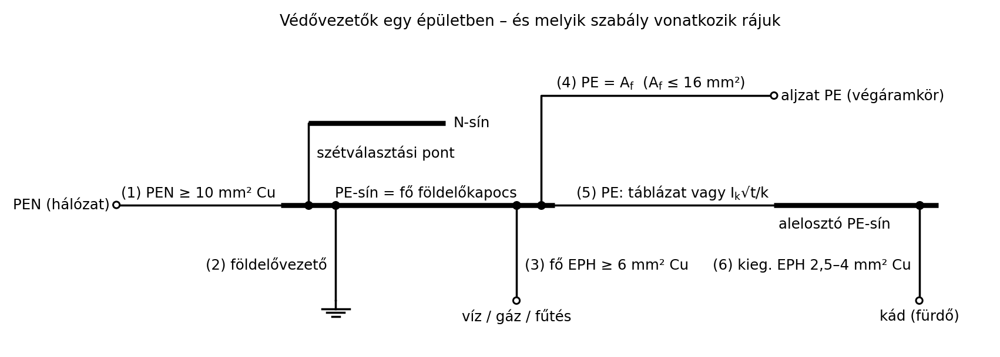

Statikus változat (mint a PDF-ben)
Képzeld el, hogy egy régi lakáselosztóban a kismegszakító leoldott, mert a mosógép testén zárlat keletkezett. A hibavédelem feladata ilyenkor az, hogy a zárlati áramot olyan gyorsan és biztonságosan vezesse vissza a transzformátorhoz, hogy a megszakító leoldjon, mielőtt a fém testen megjelenő feszültség veszélyes ideig fennállna. Ezt a visszavezető utat részben a védővezető (PE), részben pedig a PEN-vezető biztosítja. Ha ez az út rosszul van méretezve, megszakad, vagy rosszul van bekötve, akkor a védővezető nem teljesíti a feladatát, és a berendezés fém teste veszélyes, akár halálos feszültségen maradhat. Ezért ebben az alfejezetben azt tanuljuk meg, hogyan méretezzük és alakítsuk ki a védővezetőket és a PEN-vezetőt, és miért tilos őket megszakítani.
Képzelj el egy TN-C-S rendszerű lakáscsatlakozást. A közcélú hálózatból érkező kábelben addig egyetlen közösített vezető (PEN) fut, amíg el nem érik a fogyasztói főelosztót. Itt a PEN-t a fő földelőkapocsnál (EPH-csomópont) fel kell bontani egy világoskék nulla (N) és egy zöld-sárga védővezető (PE) ágra. Innen kezdve a két vezető nem köthető össze, nem cserélhető fel, és a védővezetőn – ellentétben a nullával – nem folytathat üzemi áram.
Egy épületben azonban nem egyféle védővezető van. A PEN-felbontás után a PE-sín – a fő földelőkapocs – csomópontjából többféle vezető indul, és mindegyikre más méretezési szabály vonatkozik. Az alábbi rajz ezeket a vezetőfajtákat mutatja egy helyen; a PEN-felbontás részleteit a Hálózati rendszerek: TN-C, TN-S, TN-C-S, TT, IT alfejezet tárgyalja, itt az N-sín csak a szétválasztási pont miatt látszik.

A rajz számai a táblázat sorai. Olvasáskor minden vezetőnél kérdezd meg: mi a feladata, és melyik szabály méretezi? A leggyakoribb tévedés, hogy a tanuló a fő EPH-vezető „legalább 6 mm²” szabályát a végáramköri PE-re alkalmazza – ott viszont a fázisvezető keresztmetszete dönt.
| Vezető | Feladat | Méretezési szabály (tanulási érték, ellenőrizendő) | Hol tanultuk |
|---|---|---|---|
| (1) PEN | a hálózat felől PE és N egyben; üzemi áramot is visz | ≥ 10 mm² Cu / 16 mm² Al, nem szakítható meg, nem kapcsolható | ez az alfejezet; Hálózati rendszerek: TN-C, TN-S, TN-C-S, TT, IT |
| (2) földelővezető | a fő földelőkapocs és a földelő összekötése | MSZ HD 60364-5-54 szerint, a fektetés módjától (földben, korrózióvédelem) függően | Földelők és földelési ellenállás |
| (3) fő EPH-vezető | víz-, gáz-, fűtéscső, épületszerkezet bekötése | ≥ 6 mm² Cu; 25 mm² Cu-nál nagyobb nem kell | Egyenpotenciálra hozás: fő- és kiegészítő EPH |
| (4) PE a végáramkörben | testzárlati áram visszavezetése a végpontról | táblázat: → | ez az alfejezet |
| (5) PE az alelosztóba | az alelosztó PE-sínjének táplálása | táblázat (16–35 mm² → 16 mm²; > 35 mm² → ) vagy | ez az alfejezet, számítási példa |
| (6) kiegészítő EPH-vezető | egyszerre érinthető fémrészek helyi összekötése | 2,5–4 mm² Cu (a mechanikai védettségtől függően) | Egyenpotenciálra hozás: fő- és kiegészítő EPH |
Definíció. A védővezető (PE) olyan vezető, amely kizárólag hibavédelem céljára szolgál. Rendeltetése, hogy a testzárlati hibát követően a zárlati áramot a védelmi készülék felé visszavezesse, hogy az leoldjon, és a fém test ne kerüljön tartósan veszélyes feszültségre.
Definíció. A PEN-vezető olyan vezető, amely egyesíti a védővezető (PE) és a nullavezető (N) feladatát. A TN-C rendszerekben, illetve a TN-C-S rendszerek hálózati oldalán alkalmazzák. A PEN-vezetőn üzemi áram is folyhat.
Szabály. A védővezetőt tilos megszakítani. Ez azt jelenti, hogy a védővezetőbe nem iktatható be kapcsoló, biztosíték, kismegszakító, szakaszoló vagy bármilyen olyan elem, amely az áramkört megszakíthatja. A védővezetőt csak szerszámmal oldható, véletlenül nem oldódó kötésekkel szabad csatlakoztatni. A dugaszolóaljzatokban a védőérintkezőnek mindig előbb kell érintkeznie, mint a fázis- és nullavezetőnek, és kihúzáskor utoljára szabad elválnia.
Szabály. A PEN-vezetőt tilos megszakítani, és tilos benne védelmi vagy kapcsolóelemet elhelyezni. A PEN-vezető megszakadása különösen veszélyes, mert ilyenkor a mögötte lévő, „védettnek hitt” fém testekre – a nullavezetőre kötött üzemi áramkörökön keresztül – hálózati feszültség juthat.
Szabály. TN-C-S rendszerben a PEN-vezető felbontása után a PE és az N vezetőt tilos újra összekötni. A felbontás után az egyes áramkörökben csak külön PE és N vezető használható. A PE és az N szerepét soha nem szabad felcserélni.
A védővezető keresztmetszetét általában a fázisvezető keresztmetszete alapján határozzuk meg. A gyakorlatban két módszer terjedt el: a szabványos minimális értékek és a számítás (hőterhelés, zárlati áram). A legegyszerűbb, a szerelési gyakorlatban jól használható módszer a fázisvezető keresztmetszete és a védővezető minimális keresztmetszete közötti összefüggés.
Szabvány. A kisfeszültségű villamos berendezések védővezetőinek és a PEN-vezetőknek a méretezésére, kialakítására és jelölésére a hatályos MSZ HD 60364 szabvány vonatkozik. A védővezető minimális keresztmetszete általában: - ha a fázisvezető keresztmetszete , akkor a védővezető ; - ha , akkor ; - ha , akkor .
Ezeket az értékeket a mindenkori szabvány és a gyártói adatlapok szerint kell ellenőrizni.
Számítás. Ha a védővezető anyaga más, mint a fázisvezetőé (például fázis réz, PE alumínium), akkor a táblázatot a fázisvezető saját anyagára kell alkalmazni, majd az eredményt a hőállósági tényezők () arányával kell átszámolni a védővezető anyagára: (ellenőrizendő: MSZ HD 60364-5-54, a -értékek a szabványban). A -arány nem azonos a vezetőképesség-aránnyal (az Al/Cu -arány kb. , a vezetőképesség-arány kb. 1,6).
Összefüggés. A védővezető hőterhelés szempontjából úgy méretezhető, hogy a zárlati áram által okozott melegedés ne haladja meg a megengedett hőmérsékletet. A szükséges keresztmetszet közelítőleg:
ahol a várható zárlati áram (A), a kioldási idő (s), pedig az anyagtól és a szigeteléstől függő hőállósági állandó (pl. réz PVC-szigetelésnél Amm² – csak tájékoztató érték, ellenőrizendő a szabványban). A gyakorlatban azonban a legtöbb épületvillamossági és kisebb ipari szerelésnél az előző táblázat szerinti méretezés elegendő, mert a zárlati áramok nem okoznak a fázisvezetőénél nagyobb hőterhelést.
A PEN-vezető keresztmetszete legalább akkora, mint a fázisvezetőé, ha a PEN vezetéken üzemi áram folyik. Réznél legalább , alumíniumnál legalább , ha a PEN egyben a védővezetői feladatot is ellátja. A pontos minimális érték a szabványban és a hálózati engedélyes előírásában található. A PEN-vezetőt mindenütt zöld-sárga színnel kell jelölni, és a végein világoskékkel kell jelölni, hogy azonosítható legyen a PEN-vezető. Ha a PEN-vezetőként használt vezetéken a zöld-sárga jelölés nem elég egyértelmű, a kábelvégeket szigetelőszalaggal vagy zsugorcsővel kell kiegészíteni.
Tilos. A PEN-vezetőt bármilyen kapcsoló, biztosíték vagy megszakító közbeiktatásával megszakítani. A PEN-vezető megszakadása esetén a mögötte lévő, védővezetőként használt fém testek a fázisra kerülhetnek.
Szabály. TN-C-S rendszerben a PEN-felbontást csak a berendezés egy pontján, általában a főelosztóban szabad elvégezni. A felbontás után a PE és az N vezetőt külön kell vezetni.
Figyelem. A szétválasztási pont után az N és a PE két külön vezetőként fut; egyetlen összekötésük a szétválasztási pontban van, máshol tilos őket összekötni. (Ezért a lakáselosztóban az N és a PE között mérhető folytonosság a szétválasztási ponton át záródik; a lakáson belüli összekötést leválasztott N-nel lehet kimutatni, lásd a Mérések I.: folytonosság, szigetelési ellenállás, földelés alfejezetet.) A PE-vezetőre terhelő áramkörök (pl. egyes régi megoldások) nem köthetők. A PE-vezetőn normál üzemben nem folyik áram.
A szabályok a végponton, a szerelvénydobozban és a lámpatestnél dőlnek el. Az alábbi ábra négy részlete: (a) a dugaszolóaljzat PE-kapcsa vezetékösszekötőből leágazással kap védővezetőt, így a továbbmenő PE nem a készülék kapcsán át folytatódik; (b) a fém lámpatest PE-kapcsára kötött PE-eret hosszabbra hagyjuk, hogy húzáskor utoljára szakadjon; (c) a vezetők jelölése: N világoskék, PE zöld-sárga, PEN zöld-sárga a végein világoskék jelöléssel; (d) hibás – az aljzatban az N és a védőérintkező át van hidalva.
Az (a) és (b) megoldás ajánlott szerelési gyakorlat: az aljzat cseréjekor vagy egy kiszakadó csatlakozóvezetéknél sem marad védővezető nélkül a kör további része, illetve a fém test. A (d) régi „nullázásos” megoldás ma tilos: ha az N megszakad, a csatlakoztatott I. osztályú készülék teste a terhelésen át fázisfeszültségre kerül. A HTML-kiadásban a részekre mutatva megjelenik a magyarázat.
A védővezető folytonossága a hibavédelem alapfeltétele. Ha a védővezető megszakad, a mögötte lévő fém testen testzárlat esetén a teljes fázisfeszültség megjelenhet anélkül, hogy a védelmi készülék leoldana. Ezért a védővezetőt mechanikailag és villamosan is folytonosnak kell tartani.
Szabály. A védővezetőt csak szerszámmal oldható, rázkódásnak ellenálló kötésekkel szabad csatlakoztatni. Az olyan kötések, amelyek kézzel oldhatók (pl. banándugó, csipesz), nem használhatók védővezetőként. A hagyományos dugaszolóaljzatokban a védőérintkező nem szakítható meg; a dugós csatlakoztatás a védővezető esetében csak akkor fogadható el, ha a védőérintkező kialakítása biztosítja a folytonosságot a fázis- és nullavezetővel szemben.
Hiba. Egy szerelő a lakáselosztóban a védővezetőt a nulla sínről vette le, mert „úgyis össze vannak kötve a transzformátornál”. Ez azonban TN-C-S rendszerben súlyos hiba, mert a PEN-felbontás után a nulla és a védővezető már nem azonos potenciálú, és a védővezetőre üzemi áramok kerülhetnek, ami a fém testek veszélyes feszültségét és egyben az áram-védőkapcsoló téves kioldását okozhatja.
Hiba. A védővezetőbe szerelt kismegszakító vagy szakaszoló beiktatása. Ilyenkor a megszakító leold, vagy a szakaszoló véletlenül nyitva marad, és a védővezető megszakad. Ez életveszélyes, és tilos.
Hiba. A PEN-vezető felbontása után a kék nullát és a zöld-sárga védővezetőt egy sorkapocsban újra összekötik. Ezzel a rendszer visszaalakul TN-C-re, és a védővezetőre üzemi áramok jutnak, ami feszültségkülönbséget okoz a fém testek között.
A három hiba a lakáselosztóban szemrevételezéssel felismerhető. Az alábbi ábrán (a) a helyes kialakítás látható: a szétválasztás után az N- és a PE-sín külön van, a körök vezetői a saját sínjükről indulnak; (b) a körök védővezetője a nullasínre van kötve; (c) a két sín között áthidalás van; (d) a védővezetőbe kapcsoló került.
Ellenőrzéskor a sínek közötti „rövid, ártatlannak látszó” áthidalást keresd: a lakáselosztóban (a szétválasztási ponton túl) N–PE kapcsolat nem lehet. A HTML-kiadásban a négy eset egyenként, magyarázattal jeleníthető meg.
A fém védőcsövek, kábelrendszerek, kábeltálcák és a kábelárnyékolás bizonyos feltételekkel felhasználhatók védővezetőként, de ennek szigorú korlátai vannak.
Szabály. A fém védőcső, kábeltálca vagy kábelpáncél akkor használható védővezetőként, ha: - a folytonossága biztosított (a hosszirányú villamos ellenállása elég kicsi, a kötések megbízhatók), - a keresztmetszete megfelel a védővezetőre előírt minimumnak, - a gyártó adatlapja szerint arra alkalmas, - a korrózió ellen védett.
Azonban a fém védőcsövek és tálcák inkább kiegészítő, nem elsődleges védővezetők. A gyakorlatban a kisfeszültségű berendezésekben önálló, szigetelt védővezetőt kell vezetni, mert a fémcső csatlakozásai laza korrózió vagy szerelés miatt megnövelhetik az ellenállást, és a kötések nem mindig biztosítanak megbízható folytonosságot.
Figyelem. A kábelárnyékolás vagy páncélzat csak akkor használható védővezetőként, ha a kábel konstrukciója és a gyártó azt hibavédelmi védővezetői célra jóváhagyta. Az adatkábelek árnyékolása általában nem alkalmas védővezetőnek, mert keresztmetszete kicsi, és feladata a zavarvédelem, nem a hibavédelem.
Egy társasházi lakás felújításánál a szerelő azt tapasztalta, hogy a fürdőszobai mosógép fémtestén érintéskor csípő érzést lehetett érezni. A lakás TN-C-S rendszerű volt. Az elosztóban a PEN-vezetőt felbontották, de a védővezető sínje és a nulla sínje közé valaki egy régi, kézzel oldható csatlakozót szerelt, amely idővel meglazult. A PE-sín a szétválasztás után nem volt bekötve, csak a meglazult csatlakozón át kapcsolódott az N-sínhez: a PE-hurok impedanciája nagy lett, a mosógép testzárlati áramára a kismegszakító nem oldott ki, a test veszélyes feszültségre került (a szétválasztási ponton túli PE–N összekötés tiltott, TN-C-vé alakítja a rendszert; a szétválasztási ponton egyetlen PE–N kapcsolat szükséges). A szerelő a kört azonnal lekapcsolta, a mosógépet kivonta a használatból (szigetelési hiba, javíttatni kell), majd az öt biztonsági lépés után a PEN-t a PE-sín PEN-kapcsára kötötte, a PE-sín és az N-sín közé szerszámmal bontható, megfelelő keresztmetszetű áthidalást szerelt (ez a szétválasztási pont egyetlen PE–N kapcsolata, a kézzel oldható, meglazult csatlakozó helyett), és hurokimpedanciát mért (lásd az Automatikus lekapcsolás: TN és TT, kioldási feltétel alfejezetet).
Gyakorlás: ennek az alfejezetnek a kidolgozott példái, gyakorlatai és megoldással ellátott feladatai az Összefoglaló feladatgyűjtemény villanyszerelő tanulóknak című kötet 22.3 szakaszában találhatók.
A védővezető (PE) kizárólag hibavédelmi célú, üzemi áramot nem szállít. A PEN-vezető a védő- és nullavezető közösített változata, amelyet a TN-C-S rendszerben a fogyasztói főelosztó EPH-csomópontjánál kell felbontani PE-re és N-re. A védővezető minimális keresztmetszetét a fázisvezető keresztmetszete alapján kell meghatározni: mm²-nél , – mm² között mm², mm²-nél . A védővezetőt és a PEN-vezetőt tilos megszakítani, bennük kapcsoló, biztosíték vagy megszakító nem lehet. A PEN-felbontás után a PE és N vezetőt nem szabad újra összekötni, és a védővezetőt a nulla sínre kötni is tilos. A védővezető folytonosságát rendszeresen ellenőrizni kell, mert a szakadás vagy a laza kötés testzárlatnál veszélyes feszültséget okozhat. A fém védőcsövek és árnyékolások csak szigorú feltételekkel használhatók védővezetőként, ezért a gyakorlatban önálló szigetelt védővezetőt kell vezetni. Ezek a szabályok alapozzák meg a Túlfeszültség-védelmi eszközök (SPD): típusok és beépítés és a villámvédelmi rendszer helyes csatlakoztatását is.
Egyoldalas kártya a helyszíni döntéshez. Minden határérték és idő tanulási érték (ellenőrizendő: MSZ HD 60364-4-41, -5-54, -6, a gyártói adatlap és a terv).
| Kérdés | Képlet / szabály | Tanulási érték | Hol |
|---|---|---|---|
| Kiold-e TN-ben? | B, C, D: ; mért érték ≤ ⅔; melegedés 1,2 | Kioldási feltétel | |
| Milyen gyorsan? | megengedett lekapcsolási idő | TN 0,4 / 5 s; TT 0,2 / 1 s | Kioldási feltétel |
| TT-feltétel | ; hibaáram | = 50 V (25 V) | TN és TT |
| FI-vizsgálat | ½ : nem old; : old | 1×: ≤ 300 ms; 5×: ≤ 40 ms | FI, Mérések II. |
| Kiegészítő EPH | cél: < 0,1 Ω | EPH | |
| Földelő | rúd: ; szalag: ; Wenner: | , , méterben | Földelők |
| PE-keresztmetszet | : ; 16–35: 16; > 35: ; vagy | külön PE: 2,5 / 4 mm² Cu | ez az alfejezet |
| EPH-vezetők | fő és kiegészítő EPH | fő ≥ 6 mm² (25 mm² felett nem kell); kiegészítő 2,5–4 mm² | EPH |
| PEN | nem bontható, nem kapcsolható | ≥ 10 mm² Cu / 16 mm² Al | ez az alfejezet |
Ellenőrzési sorrend:
Az alfejezetben szereplő védővezetői keresztmetszeti táblázat, a PEN-vezető minimális keresztmetszete, a hőállósági állandó és a védővezetőre vonatkozó szabványi követelmények a hatályos MSZ HD 60364 szabványon alapulnak, de a pontos értékeket és a táblázatok aktualitását a kiadás előtt ellenőrizni kell. A réz/alumínium fajlagos vezetőképesség aránya ismert, de a szabványos átszámítási előírás ellenőrzendő.